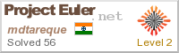

54/263, Tahara Colony, Nanded 431605,MH, India
| Aug '11 to July '15 | Application Developer/Associate at JP Morgan Chase & Co., Mumbai, IN Investment Banking |
| Jan '16 to Apr '16 | Teaching Assistant at IIIT Hyderbad for Data Structures Course |
Monsoon ’16’Difflet - Difference Between’ - Semester Project
Web2py framework project to display point-by-point difference between two entities. Python back-end
that extracts data from wikipedia pages. Demo link - bit.ly/Difflet
Monsoon ’16 House Price Prediction (Kaggle Contest) - Data Warehousing & Data Mining
Regression problem that required use of ml/regression algorithms along with feature engineering.
Monsoon ’16 HTTP 1.1 Web Proxy - Advanced Computer Networks
Web proxy that supports several http headers(RFC 1945 & 2616) along with major ‘cache-control‘ policy
Spring ’16 IoT(Internet of Things) Platform
Prof. Ramesh Loganathan
Nodejs project. Team of 6 built the IoT Platform that would enable developer to deploy his IoT idea quickly.
Different module developed were Data Listener, Sensor & Gateway Registry, Events/Rules Engine, Notification
Server.
Spring ’16 Wikipedia Search Engine
Information Retrieval & Extraction
Java project to parse and index 56 GB dump of wikipedia textual data. Query retrieval time limit of 1s using
3-level index of 7.5GB.
Spring ’16 Product Search Relevance
Statistical Methods in Artificial Intelligence
Python Project, a Kaggle competition by HomeDepot to get the search relevance score for the queries users
searched on the their website.
Monsoon ’15 ’Concurrent Data Structure Implementation’
Prof. Govindrajulu
Concurrent Stack and Queue implementation with EliminationBackOff Strategy.
Other & Self
•OS : Pintos - implemented priority scheduling.
•OS: Implemented Shell in C with builtins, pipes, io-redirection and background job
•IRE project - improving accuracy of Named Entity Recognition bit.ly/ire-ner
•Machine Learning Classification projects like handwritten-digit recognition using k-nereast neighbours
and multilayer neural network.
•Word2Vec Study project
•Intro to Design Thinking Project - Prototying, User Persona, Data Gathering
•Restaurant Finder DBMS WebApp with SMS feature.
•Snakes & Ladders game in OpenGL. & Android App : college time table application.
| July 2017(Expected) | M.Tech in CSE, International Institute of Information Technology, Hyderabad |
| Cgpa: 9.56/10 (upto Sem II) | |
| July 2011 | B.Tech in I.T., College of Engineering, Pune |
| Cgpa: 8.19/10 | |
| 2007 | H.S.C at Dr. Zakir Hussain Jr. College, Parbhan, IN |
| Score: 90% 1st in College | |
| 2005 | S.S.C at Queens English School, Parbhani |
| Score: 85.45 % | |
Difflet Demo : https://mdtareque.pythonanywhere.com/difflet/default/search
Named Entity Recognition http://mdtareque.github.io/ire-ner/, [Presentation Demo Youtube Link]
| Oct 2014 | Oracle Certified Java Professional Programmer (Oracle ID: OC1428842) |
| June 2012 | Star of the Quarter Award at JP Morgan |
| Oct 2013 | 3 times Java Dojo winner at JP Morgan |
| Aug 2010 | 1st Prize in C Code Contest at Interdisciplinary School of Scientific Computing, Univ of Pune |
| Languages | C/C++, Java, Python, Unix Scripting, JavaScript |
| Editors | VIM Master, Eclipse Pro |
| Version Control | Git, SVN, IBM Clearcase |
| Frameworks | Spring, Hibernate, Ibatis |
| Tech | Amazon EC2. nodejs, web2py |
- Competitive Programming ProjectEuler 56 Solved, Codeforces, TopCoder, HackerEarth contest
- Spend time answering on StackExchange Q&A websites like StackOverflow and Unix
- Table Tennis

http://stackoverflow.com/users/1135954/mtk/ (Top 7% reputation wise)

| English: | Fluent |
| Hindi: | Fluent |
| Marathi: | Basic Knowledge |